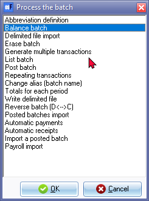
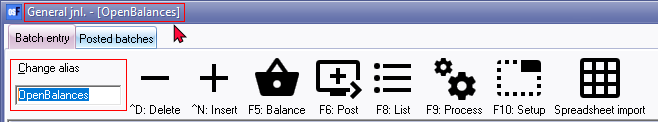
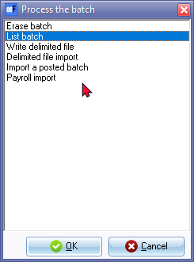

F9:Batch processing options
Batch processing options contains various options to process transactions in unposted batches, export and import functions. Various functionalities to generate and process transactions is also available.
Process the batch options - Normal batch entry
Batch processing options:
- Click Launch the correct batch type.
- Click on the F9: Process icon. The Process the batch options screen is displayed:

- Select one of the following options:
- Abbreviation definition - You may define any abbreviations, which you wish to enter in the description fields for each description, which is of a repetitive nature. You only need to select the key to transfer the full description when the cursor is in the description field of the batch entry screen. Abbreviation definitions may also be used in the description column of lines in documents (invoices, credit notes, quotes, purchases, supplier returns and orders).
- Balance batch - Before you may proceed to post a batch, you need to balance the batch. This will not be necessary when your batch is in balance (i.e. where you have entered debit transactions and credit transactions of equal value) in a batch.
- Delimited file import - Select and open a valid comma separated value file format to import the transactions in a an unposted batch. This feature will import batch transactions exported using the Write delimited file option.
- Erase batch - You may delete an entire batch, including all the entries, which you may have entered or which was imported into the batch.
- Generate multiple transactions - This option allows you to process transactions for all debtor (customer / client) accounts that matches specific criteria. You may also process transactions for creditor's with charge amounts.
|
|
Generate multiple transactions - will be replaced with the following in:
|

- List Batch - After entering all your transactions in a batch, and before updating or posting the transactions to the ledger, it is recommended to print a list of the transactions entered in the batch. You may need to check the transactions and edit the batch, if necessary, before you post the batch.
- Post batch - Posting a batch is the final step in batch processing. To Post the transactions in a batch, will automatically update the ledger accounts, general ledger (with its control accounts) and the subsidiary ledgers (individual ledger accounts for the Debtors and Creditors) simultaneously.
- Repeating transactions - The Repeating transactions feature allows you to enter transactions, which occur on a periodic basis. They may be weekly, monthly, quarterly or annually, etc. You may enter the transactions once and, when due, copy them into the normal batch, edit (if amounts have changed), delete or add an entry.
- Change alias (batch name) - The alias provides the opportunity for you to add an unique name for the batch type. For example, you may use a specific batch type (e.g. general journal) for many different transactions and may post many general journal transactions in a month or even in a year. You need to enter these in the Batch header.

|
|
Auto-alias - Setting may also be activated on the F10:Setup - Advanced tab - "Options for this batch". This will automatically generate the system date as the alias (batch name) (e.g., “20210331”) for the batch. |

|
|
Auto generated - Alias in Receipts batches - TR00001, TR00002,etc. These aliases prefixed with "TR" (consisting of seven (7) digits) will automatically be generated in receipt batches when the "Receive payment" option is used in Open item link context menu. See - |
- Totals for each period - Once you have entered transactions for more than one accounting period in any batch (journal), you may view the totals for each accounting period of the transactions in the batch (journal). This will display the total amount for the debit transactions, as well as the total amount for the credit transactions in each respective accounting period.
- Write delimited file - Export and save the transactions in a an unposted batch to a file in a comma separated value file format.
- Reverse batch (D<-->C) - If transactions were entered incorrectly in the debit column in stead of entering the transactions in the credit column, and vice versa, you may transfer (switch) the transaction amounts as entered into the credit columns to the debit columns and vice versa for any unposted batch.
- Posted batches import - This feature is not supported in this version of osFinancials5. It is recommended to use the Write delimited file option to export and save the transactions in a an unposted batch to a file in a comma separated value file format. You may then use the Delimited file import option to select and open a valid comma separated value file format to import the transactions in a an unposted batch.
|
|
osFinancials5 supports the "Excel Workbook (*.xlsx) file type Spreadsheet import and export feature.
|

- Automatic payments - You may pay your creditor (supplier / vendor) accounts, as well as refunds to debtor (customer / client) accounts (with credit balances, which need to be refunded) via the electronic banking system. The transactions for accounts with outstanding transactions and balances will be transferred into the "Automatic payments" screen, where you may select the accounts and outstanding amounts you need to pay.
- Automatic receipts - You may receive payments from debtor (customer / client) accounts for their accounts via the electronic banking system. The transactions for debtor (customer / client) accounts with outstanding transactions and balances will be transferred into the "Automatic receipts" screen, where you may select the debtor (customer / client) accounts and outstanding amounts you need to receive from the debtor 's Bank accounts.
- Import a posted batch - This option allows you to import the transactions from a posted batch in the same Set of Books.
- Payroll import - This is a plugin - Shop - Licence : Once-off - Supported applications: Logisal, RoosRoos and Unit 4.
- Click on the OK button.
Process the batch options - Repeating batch entry
In Repeating transactions batch entry screens (Edit - Repeating transactions) the F9:Process lists six (6) “Process the batch” options:
- Erase batch - You may delete an entire batch, including all the entries, which you may have entered or which was imported into the batch.
- List Batch - After entering all your transactions in a batch, and before updating or posting the transactions to the ledger, it is recommended to print a list of the transactions entered in the batch. You may need to check the transactions and edit the batch, if necessary, before you post the batch.
- Write delimited file - Export and save the transactions in a an unposted batch to a file in a comma separated value file format.
- Delimited file import - Select and open a valid comma separated value file format to import the transactions in a an unposted batch. This feature will import batch transactions exported using the Write delimited file option.
- Import a posted batch - This option allows you to import the transactions from a posted batch in the same Set of Books.
- Payroll import - This is a plugin - Shop - Licence : Once-off - Supported applications: Logisal, RoosRoos and Unit 4..